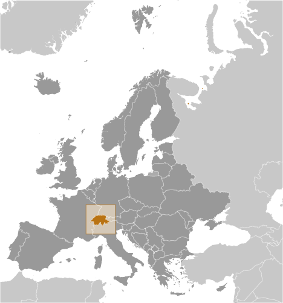
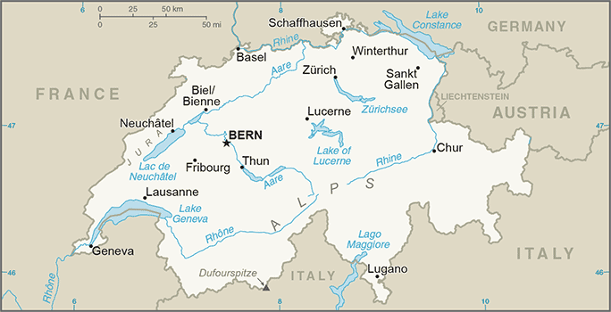
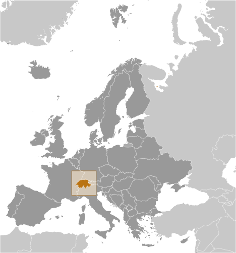
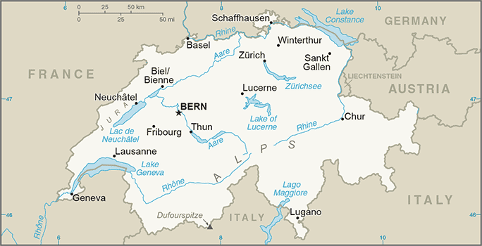

Europe :: SWITZERLAND
Introduction :: SWITZERLAND
-
The Swiss Confederation was founded in 1291 as a defensive alliance among three cantons. In succeeding years, other localities joined the original three. The Swiss Confederation secured its independence from the Holy Roman Empire in 1499. A constitution of 1848, subsequently modified in 1874, replaced the confederation with a centralized federal government. Switzerland's sovereignty and neutrality have long been honored by the major European powers, and the country was not involved in either of the two world wars. The political and economic integration of Europe over the past half century, as well as Switzerland's role in many UN and international organizations, has strengthened Switzerland's ties with its neighbors. However, the country did not officially become a UN member until 2002. Switzerland remains active in many UN and international organizations but retains a strong commitment to neutrality.
Geography :: SWITZERLAND
-
Central Europe, east of France, north of Italy47 00 N, 8 00 EEuropetotal: 41,277 sq kmland: 39,997 sq kmwater: 1,280 sq kmcountry comparison to the world: 136slightly less than twice the size of New Jerseytotal: 1,770 kmborder countries (5): Austria 158 km, France 525 km, Italy 698 km, Liechtenstein 41 km, Germany 348 km0 km (landlocked)none (landlocked)temperate, but varies with altitude; cold, cloudy, rainy/snowy winters; cool to warm, cloudy, humid summers with occasional showersmostly mountains (Alps in south, Jura in northwest) with a central plateau of rolling hills, plains, and large lakesmean elevation: 1,350 melevation extremes: lowest point: Lake Maggiore 195 mhighest point: Dufourspitze 4,634 mhydropower potential, timber, saltagricultural land: 38.7%arable land 10.2%; permanent crops 0.6%; permanent pasture 27.9%forest: 31.5%other: 29.8% (2011 est.)630 sq km (2012)population distribution corresponds to elevation with the northern and western areas far more heavily populated; the higher Alps of the south limit settlementavalanches, landslides; flash floodsair pollution from vehicle emissions and open-air burning; acid rain; water pollution from increased use of agricultural fertilizers; loss of biodiversityparty to: Air Pollution, Air Pollution-Nitrogen Oxides, Air Pollution-Persistent Organic Pollutants, Air Pollution-Sulfur 85, Air Pollution-Sulfur 94, Air Pollution-Volatile Organic Compounds, Antarctic Treaty, Biodiversity, Climate Change, Climate Change-Kyoto Protocol, Desertification, Endangered Species, Environmental Modification, Hazardous Wastes, Marine Dumping, Marine Life Conservation, Ozone Layer Protection, Ship Pollution, Tropical Timber 83, Tropical Timber 94, Wetlands, Whalingsigned, but not ratified: Law of the Sealandlocked; crossroads of northern and southern Europe; along with southeastern France, northern Italy, and southwestern Austria, has the highest elevations in the Alps
People and Society :: SWITZERLAND
-
8,236,303 (July 2017 est.)country comparison to the world: 98noun: Swiss (singular and plural)adjective: SwissGerman 65%, French 18%, Italian 10%, Romansch 1%, other 6%German (or Swiss German) (official) 63%, French (official) 22.7%, Italian (official) 8.1%, English 4.9%, Portuguese 3.7%, Albanian 3%, Serbo-Croatian 2.4%, Spanish 2.2%, Romansch (official) 0.5%, other 7.1%note: German, French, Italian, and Romansch are all national and official languages; totals more than 100% because some respondents indicated more than one main language (2015 est.)Roman Catholic 37.3%, Protestant 24.9%, other Christian 5.8%, Muslim 5.1%, other 1.4%, Jewish 0.2%, none 23.9%, unspecified 1.3% (2015 est.)0-14 years: 15.16% (male 642,814/female 605,689)15-24 years: 10.88% (male 458,044/female 438,373)25-54 years: 43.21% (male 1,784,051/female 1,774,494)55-64 years: 12.6% (male 519,709/female 518,421)65 years and over: 18.15% (male 658,673/female 836,035) (2017 est.)total dependency ratio: 48.8youth dependency ratio: 22elderly dependency ratio: 26.8potential support ratio: 3.7 (2015 est.)total: 42.4 yearsmale: 41.4 yearsfemale: 43.4 years (2017 est.)country comparison to the world: 280.69% (2017 est.)country comparison to the world: 13910.5 births/1,000 population (2017 est.)country comparison to the world: 1878.3 deaths/1,000 population (2017 est.)country comparison to the world: 834.7 migrant(s)/1,000 population (2017 est.)country comparison to the world: 27population distribution corresponds to elevation with the northern and western areas far more heavily populated; the higher Alps of the south limit settlementurban population: 74.1% of total population (2017)rate of urbanization: 1.1% annual rate of change (2015-20 est.)Zurich 1.246 million; BERN (capital) 358,000 (2015)at birth: 1.06 male(s)/female0-14 years: 1.06 male(s)/female15-24 years: 1.04 male(s)/female25-54 years: 1.01 male(s)/female55-64 years: 1 male(s)/female65 years and over: 0.78 male(s)/femaletotal population: 0.97 male(s)/female (2016 est.)30.7 years (2014 est.)5 deaths/100,000 live births (2015 est.)country comparison to the world: 172total: 3.6 deaths/1,000 live birthsmale: 4 deaths/1,000 live birthsfemale: 3.2 deaths/1,000 live births (2017 est.)country comparison to the world: 202total population: 82.6 yearsmale: 80.3 yearsfemale: 85.1 years (2017 est.)country comparison to the world: 101.56 children born/woman (2017 est.)country comparison to the world: 18972.9% (2012)11.7% of GDP (2014)country comparison to the world: 74.11 physicians/1,000 population (2014)5 beds/1,000 population (2011)improved:urban: 100% of populationrural: 100% of populationtotal: 100% of populationunimproved:urban: 0% of populationrural: 0% of populationtotal: 0% of population (2015 est.)improved:urban: 99.9% of populationrural: 99.8% of populationtotal: 99.9% of populationunimproved:urban: 0.1% of populationrural: 0.2% of populationtotal: 0.1% of population (2015 est.)NANANA19.5% (2016)country comparison to the world: 1125.1% of GDP (2013)country comparison to the world: 66total: 16 yearsmale: 16 yearsfemale: 16 years (2014)total: 8.4%male: 8.7%female: 8.1% (2016 est.)country comparison to the world: 111
Government :: SWITZERLAND
-
conventional long form: Swiss Confederationconventional short form: Switzerlandlocal long form: Schweizerische Eidgenossenschaft (German); Confederation Suisse (French); Confederazione Svizzera (Italian); Confederaziun Svizra (Romansh)local short form: Schweiz (German); Suisse (French); Svizzera (Italian); Svizra (Romansh)etymology: name derives from the canton of Schwyz, one of the founding cantons of the Old Swiss Confederacy that formed in the 14th centuryfederal republic (formally a confederation)name: Berngeographic coordinates: 46 55 N, 7 28 Etime difference: UTC+1 (6 hours ahead of Washington, DC, during Standard Time)daylight saving time: +1hr, begins last Sunday in March; ends last Sunday in October26 cantons (cantons, singular - canton in French; cantoni, singular - cantone in Italian; Kantone, singular - Kanton in German); Aargau, Appenzell Ausserrhoden, Appenzell Innerrhoden, Basel-Landschaft, Basel-Stadt, Berne/Bern, Fribourg/Freiburg, Geneve, Glarus, Graubuenden/Grigioni/Grischun, Jura, Luzern, Neuchatel, Nidwalden, Obwalden, Sankt Gallen, Schaffhausen, Schwyz, Solothurn, Thurgau, Ticino, Uri, Valais/Wallis, Vaud, Zug, Zuerichnote: 6 of the cantons - Appenzell Ausserrhoden, Appenzell Innerrhoden, Basel-Landschaft, Basel-Stadt, Nidwalden, Obwalden - are referred to as half cantons because they elect only one member to the Council of States and, in popular referendums where a majority of popular votes and a majority of cantonal votes are required, these 6 cantons only have a half vote1 August 1291 (founding of the Swiss Confederation)Founding of the Swiss Confederation in 1291; note - since 1 August 1891 celebrated as Swiss National Dayhistory: previous 1848, 1874; latest adopted by referendum 18 April 1999, effective 1 January 2000amendments: proposed by the two houses of the Federal Assembly or by petition of at least one million voters (called the "federal popular initiative"); passage of proposals requires majority vote in a referendum; following drafting of an amendment by the Assembly, its passage requires approval by majority vote in a referendum and approval by the majority of cantons; amended many times, last in 2016 (2016)civil law system; judicial review of legislative acts, except for federal decrees of a general obligatory characteraccepts compulsory ICJ jurisdiction with reservations; accepts ICCt jurisdictioncitizenship by birth: nocitizenship by descent only: at least one parent must be a citizen of Switzerlanddual citizenship recognized: yesresidency requirement for naturalization: 12 years including at least 3 of the last 5 years prior to application18 years of age; universalchief of state: President of the Swiss Confederation Doris LEUTHARD (since 1 January 2017); Vice President Alain BERSET (since 1 January 2017); note - the Federal Council, which is comprised of 7 federal councillors, constitutes the federal government of Switzerland; council members rotate in a 1-year term as federal president (chief of state and head of government)head of government: President of the Swiss Confederation Doris LEUTHARD (since 1 January 2017); Vice President Alain BERSET (since 1 January 2017)cabinet: Federal Council or Bundesrat (in German), Conseil Federal (in French), Consiglio Federale (in Italian) indirectly elected usually from among its members by the Federal Assembly for a 4-year termelections/appointments: president and vice president elected by the Federal Assembly from among members of the Federal Council for a 1-year, non-consecutive term; election last held on 7 December 2016 (next to be held in early December 2017)election results: Doris LEUTHARD elected president; Federal Assembly vote - 188 of 207; Alain BERSET elected vice presidentdescription: bicameral Federal Assembly or Bundesversammlung (in German), Assemblee Federale (in French), Assemblea Federale (in Italian) consists of the Council of States or Staenderat (in German), Conseil des Etats (in French), Consiglio degli Stati (in Italian) (46 seats; members in multi-seat constituencies representing cantons and single-seat constituencies representing half cantons directly elected by simple majority vote; members serve 4-year terms) and the National Council or Nationalrat (in German), Conseil National (in French), Consiglio Nazionale (in Italian) (200 seats; 195 members in cantons directly elected by proportional representation vote and 6 in half cantons directly elected by simple majority vote; members serve 4-year terms)elections: Council of States - last held in most cantons on 18 October 2015 (each canton determines when the next election will be held); National Council - last held on 18 October 2015 (next to be held in October 2019)election results: Council of States - percent of vote by party - NA; seats by party as of 18 October 2015 - CVP 13, FDP 13, SDP 12, SVP 5, other 3; National Council - percent of vote by party - SVP 29.4%, SPS 18.8%, FDP 16.4%, CVP 11.6%, Green Party 7.1%, GLP 4.6%, BDP 4.1%, other 8.0%; seats by party - SVP 68, SPS 43, FDP 33, CVP 30, Green Party 12, GLP 7, BDP 7highest court(s): Federal Supreme Court (consists of 38 judges and 31 substitutes and organized into 5 sections)judge selection and term of office: judges elected by the Federal Assembly for 6-year terms; note - judges are affiliated with political parties and are elected according to linguistic and regional criteria in approximate proportion to the level of party representation in the Federal Assemblysubordinate courts: Federal Criminal Court (began in 2004); Federal Administrative Court (began in 2007); note - each of Switzerland's 26 cantons has its own courtsChristian Democratic People's Party (Christlichdemokratische Volkspartei der Schweiz or CVP, Parti Democrate-Chretien Suisse or PDC, Partito Popolare Democratico Svizzero or PPD, Partida Cristiandemocratica dalla Svizra or PCD) [Gerhard PFISTER]Conservative Democratic Party (Buergerlich-Demokratische Partei Schweiz or BDP, Parti Bourgeois Democratique Suisse or PBD, Partito Borghese Democratico Svizzero or PBD, Partido burgais democratica Svizera or PBD) [Martin LANDOLT]Free Democratic Party or FDP.The Liberals (FDP.Die Liberalen, PLR.Les Liberaux-Radicaux, PLR.I Liberali, Ils Liberals) [Petra GOESSI]Green Liberal Party (Grunliberale or GLP, Parti vert liberale or PVL, Partito Verde-Liberale or PVL, Partida Verde Liberale or PVL) [Jurge GROSSEN]Green Party (Gruene Partei der Schweiz or Gruene, Parti Ecologiste Suisse or Les Verts, Partito Ecologista Svizzero or I Verdi, Partida Ecologica Svizra or La Verda) [Regula RYTZ]Social Democratic Party (Sozialdemokratische Partei der Schweiz or SPS, Parti Socialiste Suisse or PSS, Partito Socialista Svizzero or PSS, Partida Socialdemocratica de la Svizra or PSS) [Christian LEVRAT]Swiss People's Party (Schweizerische Volkspartei or SVP, Union Democratique du Centre or UDC, Unione Democratica di Centro or UDC, Uniun Democratica dal Center or UDC) [Albert ROESTI]other minor partiesNAADB (nonregional member), AfDB (nonregional member), Australia Group, BIS, CD, CE, CERN, EAPC, EBRD, EFTA, EITI (implementing country), ESA, FAO, FATF, G-10, IADB, IAEA, IBRD, ICAO, ICC (national committees), ICCt, ICRM, IDA, IEA, IFAD, IFC, IFRCS, IGAD (partners), ILO, IMF, IMO, IMSO, Interpol, IOC, IOM, IPU, ISO, ITSO, ITU, ITUC (NGOs), LAIA (observer), MIGA, MINUSMA, MONUSCO, NEA, NSG, OAS (observer), OECD, OIF, OPCW, OSCE, Pacific Alliance (observer), Paris Club, PCA, PFP, Schengen Convention, UN, UNCTAD, UNESCO, UNHCR, UNIDO, UNITAR, UNMISS, UNMOGIP, UNRWA, UNTSO, UNWTO, UPU, WCO, WHO, WIPO, WMO, WTO, ZCchief of mission: Ambassador Martin Werner DAHINDEN (since 18 November 2014)chancery: 2900 Cathedral Avenue NW, Washington, DC 20008telephone: [1] (202) 745-7900FAX: [1] (202) 387-2564consulate(s) general: Atlanta, Chicago, Los Angeles, New York, San Franciscochief of mission: Ambassador (vacant); Charge d'Affaires Tara Feret ERATH (since 20 January 2017) note - also accredited to Liechtensteinembassy: Sulgeneckstrasse 19, CH-3007 Bernmailing address: use embassy street addresstelephone: [41] (031) 357-70-11FAX: [41] (031) 357-73-20red square with a bold, equilateral white cross in the center that does not extend to the edges of the flag; various medieval legends purport to describe the origin of the flag; a white cross used as identification for troops of the Swiss Confederation is first attested at the Battle of Laupen (1339)Swiss cross (white cross on red field, arms equal length); national colors: red, whitethe Swiss anthem has four names: "Schweizerpsalm" [German] "Cantique Suisse" [French] "Salmo svizzero," [Italian] "Psalm svizzer" [Romansch] (Swiss Psalm)lyrics/music: Leonhard WIDMER [German], Charles CHATELANAT [French], Camillo VALSANGIACOMO [Italian], and Flurin CAMATHIAS [Romansch]/Alberik ZWYSSIGnote: unofficially adopted 1961, officially 1981; the anthem has been popular in a number of Swiss cantons since its composition (in German) in 1841; translated into the other three official languages of the country (French, Italian, and Romansch), it is official in each of those languages
Economy :: SWITZERLAND
-
Switzerland, a country that espouses neutrality, is a prosperous and modern market economy with low unemployment, a highly skilled labor force, and a per capita GDP among the highest in the world. Switzerland's economy benefits from a highly developed service sector, led by financial services, and a manufacturing industry that specializes in high-technology, knowledge-based production. Its economic and political stability, transparent legal system, exceptional infrastructure, efficient capital markets, and low corporate tax rates also make Switzerland one of the world's most competitive economies.The Swiss have brought their economic practices largely into conformity with the EU's to enhance their international competitiveness, but some trade protectionism remains, particularly for its small agricultural sector. The fate of the Swiss economy is tightly linked to that of its neighbors in the euro zone, which purchases half of Swiss exports. The global financial crisis of 2008 and resulting economic downturn in 2009 stalled demand for Swiss exports and put Switzerland into a recession. During this period, the Swiss National Bank (SNB) implemented a zero-interest rate policy to boost the economy, as well as to prevent appreciation of the franc, and Switzerland's economy began to recover in 2010.The sovereign debt crises unfolding in neighboring euro-zone countries, however, coupled with ongoing economic instability in Russia and other eastern European economies continue to pose a significant risk to the Swiss economy, driving up demand for the Swiss franc by investors seeking a safe-haven currency. In January 2015, the SNB abandoned the Swiss franc’s peg to the euro, roiling global currency markets and making active SNB intervention a necessary hallmark of present-day Swiss monetary policy. The independent SNB has upheld its zero interest rate policy and conducted major market interventions to prevent further appreciation of the Swiss franc, but parliamentarians have urged it to do more to weaken the currency. The franc's strength has made Swiss exports less competitive and weakened the country's growth outlook; GDP growth fell below 2% per year from 2011-16.In recent years, Switzerland has responded to increasing pressure from neighboring countries and trading partners to reform its banking secrecy laws, by agreeing to conform to OECD regulations on administrative assistance in tax matters, including tax evasion. The Swiss government has also renegotiated its double taxation agreements with numerous countries, including the US, to incorporate OECD standards, and is openly considering the possibility of imposing taxes on bank deposits held by foreigners.$502.7 billion (2016 est.)$489.6 billion (2015 est.)$478.7 billion (2014 est.)note: data are in 2016 dollarscountry comparison to the world: 40$669 billion (2016 est.)1.4% (2016 est.)1.2% (2015 est.)2.5% (2014 est.)country comparison to the world: 166$60,400 (2016 est.)$60,200 (2015 est.)$60,200 (2014 est.)note: data are in 2016 dollarscountry comparison to the world: 1733.6% of GDP (2016 est.)34.5% of GDP (2015 est.)31.9% of GDP (2014 est.)country comparison to the world: 20household consumption: 53.9%government consumption: 11.5%investment in fixed capital: 24.2%investment in inventories: -1.7%exports of goods and services: 65.5%imports of goods and services: -53.5% (2016 est.)agriculture: 0.7%industry: 25.5%services: 73.8% (2016 est.)grains, fruits, vegetables; meat, eggs, dairy productsmachinery, chemicals, watches, textiles, precision instruments, tourism, banking, insurance, pharmaceuticals2.3% (2016 est.)country comparison to the world: 995.119 million (2016 est.)country comparison to the world: 81agriculture: 3.3%industry: 19.8%services: 76.9% (2015)3.3% (2016 est.)3.2% (2015 est.)country comparison to the world: 336.6% (2014 est.)lowest 10%: 7.5%highest 10%: 19% (2007)29.5 (2014 est.)33.1 (1992)country comparison to the world: 128revenues: $230.4 billionexpenditures: $226 billionnote: includes federal, cantonal, and municipal budgets (2016 est.)34.9% of GDP (2016 est.)country comparison to the world: 560.7% of GDP (2016 est.)country comparison to the world: 3032.6% of GDP (2016 est.)33.4% of GDP (2015 est.)note: general government gross debt; gross debt consists of all liabilities that require payment or payments of interest and/or principal by the debtor to the creditor at a date or dates in the future; includes debt liabilities in the form of Special Drawing Rights (SDRs), currency and deposits, debt securities, loans, insurance, pensions and standardized guarantee schemes, and other accounts payable; all liabilities in the GFSM 2001 system are debt, except for equity and investment fund shares and financial derivatives and employee stock optionscountry comparison to the world: 151calendar year-0.4% (2016 est.)-1.1% (2015 est.)country comparison to the world: 320.5% (31 December 2016)0.75% (31 December 2009)country comparison to the world: 1312.65% (31 December 2016 est.)2.68% (31 December 2015 est.)country comparison to the world: 172$555.7 billion (31 December 2016 est.)$508.2 billion (31 December 2015 est.)country comparison to the world: 11$1.232 trillion (31 December 2016 est.)$1.21 trillion (31 December 2015 est.)country comparison to the world: 16$1.166 trillion (31 December 2016 est.)$1.142 trillion (31 December 2015 est.)country comparison to the world: 16$1.519 trillion (31 December 2015 est.)$1.495 trillion (31 December 2014 est.)$1.541 trillion (31 December 2013 est.)country comparison to the world: 10$70.54 billion (2016 est.)$77.38 billion (2015 est.)country comparison to the world: 7$318.1 billion (2016 est.)$303.1 billion (2015 est.)note: trade data exclude trade with Switzerlandcountry comparison to the world: 15machinery, chemicals, metals, watches, agricultural productsGermany 14.4%, US 12.1%, UK 10.7%, China 9%, Hong Kong 6.1%, France 5.8%, Italy 4.9%, India 4.8% (2016)$264.9 billion (2016 est.)$249.5 billion (2015 est.)country comparison to the world: 18machinery, chemicals, vehicles, metals; agricultural products, textilesGermany 19.4%, US 9%, Italy 7.4%, UK 7.1%, UAE 6.2%, France 6.1%, China 4.7% (2016)$679.3 billion (31 December 2016 est.)$602.7 billion (31 December 2015 est.)country comparison to the world: 4$1.664 trillion (31 March 2016 est.)$1.663 trillion (31 March 2015 est.)country comparison to the world: 12$1.217 trillion (31 December 2016 est.)$1.255 trillion (31 December 2015 est.)country comparison to the world: 9$1.528 trillion (31 December 2016 est.)$1.51 trillion (31 December 2015 est.)country comparison to the world: 7Swiss francs (CHF) per US dollar -0.9852 (2016 est.)0.9852 (2015 est.)0.9627 (2014 est.)0.9152 (2013 est.)0.9377 (2012 est.)
Energy :: SWITZERLAND
-
electrification - total population: 100% (2016)64.06 billion kWh (2015 est.)country comparison to the world: 4558.45 billion kWh (2015 est.)country comparison to the world: 4430.17 billion kWh (2016 est.)country comparison to the world: 634.1 billion kWh (2016 est.)country comparison to the world: 519.62 million kW (2015 est.)country comparison to the world: 452.9% of total installed capacity (2015 est.)country comparison to the world: 20817% of total installed capacity (2015 est.)country comparison to the world: 1261% of total installed capacity (2015 est.)country comparison to the world: 2611.1% of total installed capacity (2015 est.)country comparison to the world: 670 bbl/day (2016 est.)country comparison to the world: 198319.1 bbl/day (2016 est.)country comparison to the world: 7758,400 bbl/day (2016 est.)country comparison to the world: 540 bbl (1 January 2017 es)country comparison to the world: 19763,400 bbl/day (2016 est.)country comparison to the world: 79217,400 bbl/day (2016 est.)country comparison to the world: 548,894 bbl/day (2016 est.)country comparison to the world: 85166,300 bbl/day (2016 est.)country comparison to the world: 3925 million cu m (2015 est.)country comparison to the world: 914.639 billion cu m (2015 est.)country comparison to the world: 670 cu m (2016 est.)country comparison to the world: 1893.484 billion cu m (2015 est.)country comparison to the world: 40NA cu m (1 January 2011 es)45 million Mt (2013 est.)country comparison to the world: 63
Communications :: SWITZERLAND
-
total subscriptions: 4.029 millionsubscriptions per 100 inhabitants: 49 (July 2016 est.)country comparison to the world: 38total: 11,283,400subscriptions per 100 inhabitants: 138 (July 2016 est.)country comparison to the world: 79general assessment: highly developed telecommunications infrastructure with excellent domestic and international servicesdomestic: ranked among leading countries for fixed-line teledensity and infrastructure; mobile-cellular subscribership roughly 140 per 100 persons; extensive cable and microwave radio relay networksinternational: country code - 41; satellite earth stations - 2 Intelsat (Atlantic Ocean and Indian Ocean) (2016)the publicly owned radio and TV broadcaster, Swiss Broadcasting Corporation (SRG/SSR), operates 7 national TV networks, 3 broadcasting in German, 2 in Italian, and 2 in French; private commercial TV stations broadcast regionally and locally; TV broadcasts from stations in Germany, Italy, and France are widely available via multi-channel cable and satellite TV services; SRG/SSR operates 17 radio stations that, along with private broadcasters, provide national to local coverage (2015).chtotal: 7,312,744percent of population: 89.4% (July 2016 est.)country comparison to the world: 54
Transportation :: SWITZERLAND
-
number of registered air carriers: 12inventory of registered aircraft operated by air carriers: 163annual passenger traffic on registered air carriers: 26,843,991annual freight traffic on registered air carriers: 1,322,379,468 mt-km (2015)HB (2016)63 (2013)country comparison to the world: 78total: 40over 3,047 m: 32,438 to 3,047 m: 21,524 to 2,437 m: 12914 to 1,523 m: 6under 914 m: 17 (2013)total: 23under 914 m: 23 (2013)2 (2013)gas 1,800 km; oil 94 km; refined products 7 km (2013)total: 5,651.5 kmstandard gauge: 4,424.8 km 1.435-m gauge (3,634.1 km electrified)narrow gauge: 2 km 1.200-m gauge (2 km electrified); 1,188.3 km 1.000-m gauge (1,167.3 km electrified); 36.4 km 0.800-m gauge (36.4 km electrified) (2014)country comparison to the world: 33total: 71,464 kmpaved: 71,464 km (includes 1,415 of expressways) (2011)country comparison to the world: 661,292 km (there are 1,227 km of waterways on lakes and rivers for public transport and 65 km on the Rhine River between Basel-Rheinfelden and Schaffhausen-Bodensee for commercial goods transport) (2010)country comparison to the world: 57total: 50by type: bulk carrier 31, cargo 2, chemical/petroleum tanker 7, container 10(2017)registered in other countries: 127 (Antigua and Barbuda 7, Bahamas 1, Belize 1, Cayman Islands 1, France 5, Germany 2, Hong Kong 5, Italy 13, Liberia 25, Luxembourg 1, Malta 20, Marshall Islands 12, NZ 2, Panama 15, Portugal 3, Russia 3, Saint Vincent and the Grenadines 7, Singapore 3, Spain 1) (2010)country comparison to the world: 72river port(s): Basel (Rhine)
Military and Security :: SWITZERLAND
-
0.71% of GDP (2016)0.67% of GDP (2015)0.66% of GDP (2014)0.73% of GDP (2013)0.69% of GDP (2012)country comparison to the world: 117Swiss Armed Forces: Land Forces, Swiss Air Force (Schweizer Luftwaffe) (2013)19-26 years of age for male compulsory military service; 18 years of age for voluntary male and female military service; every Swiss male has to serve at least 260 days in the armed forces; conscripts receive 18 weeks of mandatory training, followed by seven 3-week intermittent recalls for training during the next 10 years (2012)
Transnational Issues :: SWITZERLAND
-
nonerefugees (country of origin): 26,264 (Eritrea); 11,159 (Syria); 5,675 (Afghanistan); 5,458 (Sri Lanka) (2016)stateless persons: 66 (2016)a major international financial center vulnerable to the layering and integration stages of money laundering; despite significant legislation and reporting requirements, secrecy rules persist and nonresidents are permitted to conduct business through offshore entities and various intermediaries; transit country for and consumer of South American cocaine, Southwest Asian heroin, and Western European synthetics; domestic cannabis cultivation and limited ecstasy production